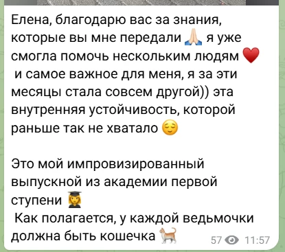
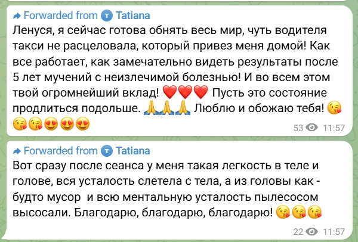
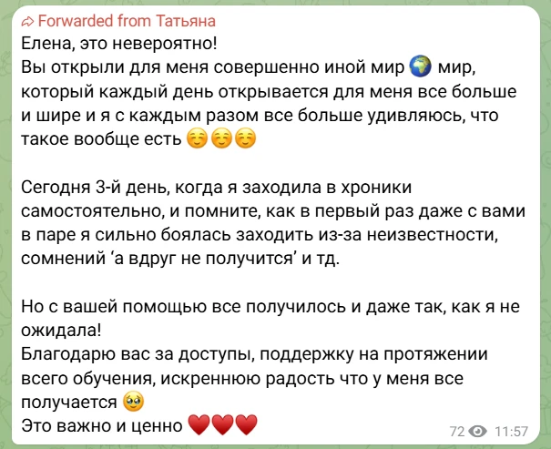
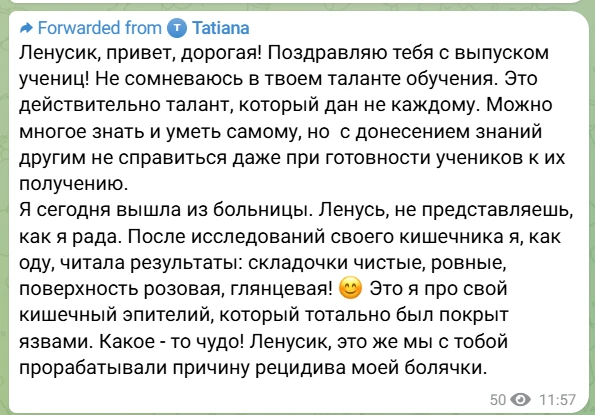
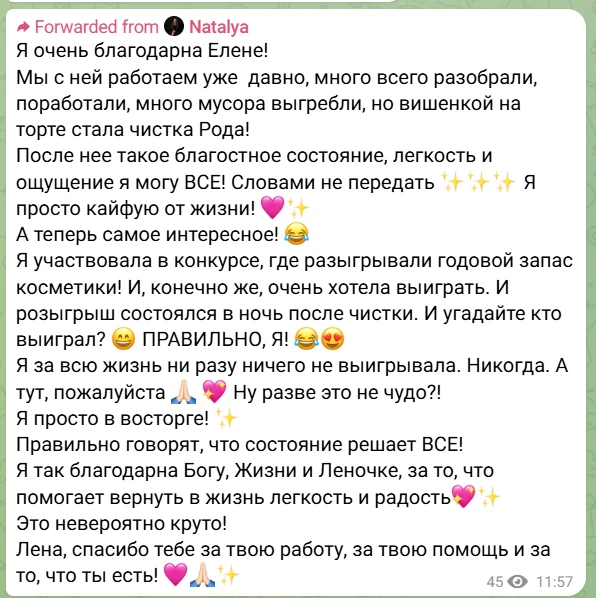
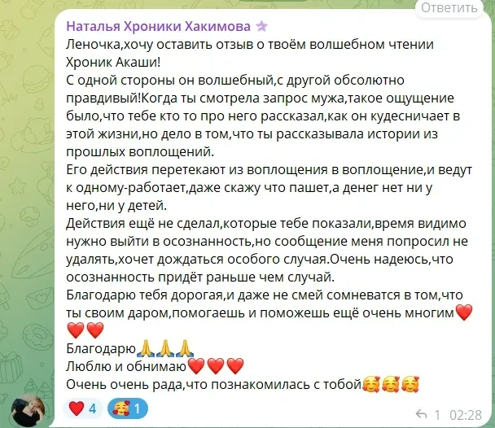
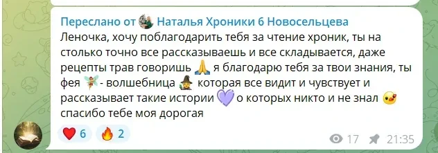
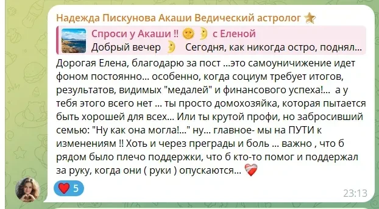

Краткий ответ: Отзывы клиентов после индивидуальных сессий Хроник Акаши показывают конкретные трансформации в деньгах, отношениях и внутреннем спокойствии уже после первого погружения. Средний рейтинг — 4.9 из 5.
Лучший способ понять, как работают Хроники Акаши — прочитать реальные отзывы клиентов после сессий. Ниже собраны честные истории изменений и скриншоты переписок из Telegram.
Реальные отзывы клиентов после сессий в Хрониках Акаши
«Ленуся, я сейчас готова обнять весь мир, чуть водителя такси не расцеловала, который привез меня домой! Как все работает, как замечательно видеть результаты после 5 лет мучений с неизлечимой болезнью! И во всем этом твой огромнейший вклад! Сразу после сеанса у меня такая легкость в теле и голове, вся усталость слетела с тела, а из головы как будто мусор и всю ментальную усталость пылесосом высосали. Благодарю, благодарю, благодарю!»
ТатьянаИсцеление и лёгкость в теле
★★★★★
«Я сегодня вышла из больницы. Ленусь, не представляешь, как я рада. После исследований своего кишечника я, как оду, читала результаты: складочки чистые, ровные, поверхность розовая, глянцевая! Это я про свой кишечный эпителий, который тотально был покрыт язвами. Какое-то чудо! Ленусик, это же мы с тобой прорабатывали причину рецидива моей болячки.»
ТатьянаПроработка психосоматики и рецидива
★★★★★
«Елена, это невероятно! Вы открыли для меня совершенно иной мир — мир, который каждый день открывается для меня все больше и шире. Сегодня 3-й день, когда я заходила в Хроники самостоятельно, и помните, как в первый раз даже с вами в паре я сильно боялась заходить из-за неизвестности и сомнений „а вдруг не получится“. Но с вашей помощью все получилось и даже так, как я не ожидала! Благодарю вас за доступы, поддержку на протяжении всего обучения и искреннюю радость, что у меня все получается.»
ТатьянаОбучение и самостоятельный вход в Хроники
★★★★★
«Елена, благодарю вас за знания, которые вы мне передали! Я уже смогла помочь нескольким людям, и самое важное для меня — я за эти месяцы стала совсем другой. Появилась эта внутренняя устойчивость, которой раньше так не хватало. Это мой импровизированный выпускной из академии первой ступени!»
Выпускница 1-й ступениОбучение и внутренняя опора
★★★★★
«Я очень благодарна Елене! Мы с ней работаем уже давно, много всего разобрали, много мусора выгребли, но вишенкой на торте стала чистка Рода! После нее такое благостное состояние, легкость и ощущение „я могу ВСЕ!“ Словами не передать — я просто кайфую от жизни! В ночь после чистки состоялся розыгрыш годового запаса косметики, и я впервые в жизни выиграла! Правильно говорят, что состояние решает ВСЕ!»
НатальяЧистка Рода и поток изобилия
★★★★★
«Елена, хочу выразить благодарность за то, что так искренне и безотказно помогла с ответами на вопросы, которые мучили долгое время! Помогла разобраться в себе, дала веру в себя! Спасибо, что щедро делишься своими способностями — столько осознаний, слёзы, мурашки, любовь и благодарность! Леночка, ты бриллиант!»
Галина МельниковаОтветы на давние вопросы и вера в себя
★★★★★
«Леночка, хочу оставить отзыв о твоём волшебном и абсолютно правдивом чтении Хроник Акаши! Когда ты смотрела запрос мужа, было ощущение, что тебе кто-то про него рассказал, но ты рассказывала истории из прошлых воплощений — как его действия перетекают из жизни в жизнь и почему он пашет, а денег нет. Благодарю тебя, дорогая, ты своим даром помогаешь очень многим!»
Наталья ХакимоваКармические сценарии в деньгах и семье
★★★★★
«Леночка, хочу поблагодарить тебя за чтение Хроник! Ты настолько точно всё рассказываешь и всё складывается, даже рецепты трав говоришь. Я благодарю тебя за твои знания — ты фея-волшебница, которая всё видит, чувствует и рассказывает такие истории, о которых никто и не знал!»
Наталья НовосельцеваГлубокое считывание поля и здоровья
★★★★★
«Дорогая Елена, благодарю! Это самоуничижение идёт фоном постоянно, особенно когда социум требует итогов, видимых „медалей“ и финансового успеха… Главное — мы на пути к изменениям! Как важно, чтобы рядом было плечо поддержки, чтобы кто-то помог и поддержал за руку, когда они опускаются.»
Надежда ПискуноваВыход из самообесценивания и поддержка
Чистка в Хрониках Акаши: отзывы о снятии кармических и родовых блоков
Многие клиенты обращаются с вопросом: «Что такое чистка в Хрониках Акаши и как она работает?» В обществе слово «чистка» нередко ассоциируется с магическими ритуалами, свечами или «снятием порчи». В практике Хроник Акаши и системных расстановок этот процесс имеет принципиально иную, психологическую и энергоинформационную природу:
Расторжение кармических контрактов и обетов: В прошлых воплощениях душа могла дать обет нищеты («деньги — это грех»), безбрачия или мученичества. В Хрониках мы находим этот контракт и осознанно аннулируем его с согласия клиента.
Снятие чужих родовых программ: Освобождение от родового чувства вины, страха богатства («раскулачат») и сценариев тяжелой женской доли, которые человек неосознанно нес за предков.
Очищение от энергетических привязок: Завершение оттока энергии в прошлые токсичные отношения, обиды и травмирующие события.
★★★★★
«Я долго искала отзывы про чистку в Хрониках Акаши, боялась магии. Но Елена объяснила всё очень спокойно и экологично. На сессии мы вышли на давний обет самопожертвования, из-за которого я всем всё отдавала бесплатно и жила в долгах. Мы бережно его расторгли. Буквально через неделю внутри появилось ощущение чистоты и легкости, смогла спокойно поднять чек на свои услуги и клиенты согласились!»
Екатерина, 39 летКармическая чистка и финансы
★★★★★
«Пришла с ощущением, что на мне висит чужой груз, постоянная тяжесть в груди и хроническая усталость. В Хрониках увидели лояльность бабушке по отцовской линии, которая тяжело страдала. После сессии и расстановочной фразы меня словно отпустило физически. Прошло три недели: энергия вернулась, сплю спокойно, в семье прекратились постоянные ссоры. Это лучшее исцеление без всяких оккультных штучек.»
Ирина, 33 годаСнятие родового груза
Скриншоты отзывов из Telegram
Эти отзывы оставлены прямо в Telegram-канале @sprosiuakashi и в личных сообщениях Елене — живые эмоции без редактуры.








«Мне не нужно, чтобы вы верили в Хроники Акаши. Мне нужно, чтобы вы честно пришли со своим запросом — и оценили результат по тому, что изменится в вашей жизни.» — Елена, проводник
Что чаще всего отмечают клиенты после сессий
По опыту сотен сессий, клиенты чаще всего говорят о следующем:
После чтения Хроник Акаши: ощущение ясности и точного попадания в ситуацию, неожиданные слёзы «от точности», понимание корней проблемы, которое раньше ускользало.
После расстановки: ощущение «что-то отпустило», лёгкость в теле, улучшение отношений с близкими (даже если они не знали о сессии), сдвиг в финансовой ситуации в течение 2–4 недель.
Самый частый комментарий: «Жаль, что не пришла раньше — столько лет мучилась, а корень оказался таким понятным».
Для кого это точно сработает
Хроники Акаши и расстановки дают лучший результат тем, кто:
— уже что-то пробовал (психологию, коучинг, другие практики) и чувствует, что «что-то не пускает» на более глубоком уровне;
— готов к честному диалогу с собой — без иллюзий и «магического мышления»;
— хочет не просто «услышать красивые слова», а получить конкретное понимание и ресурс для изменений.